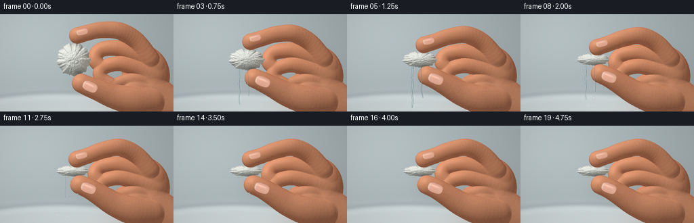
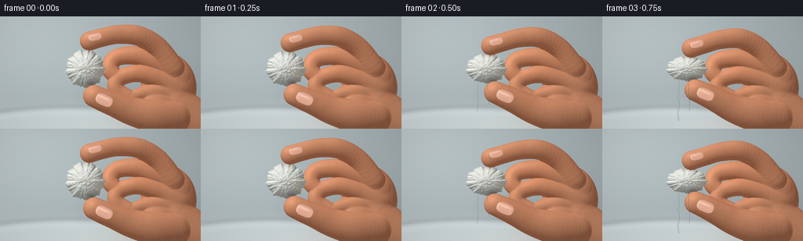

CODING AGENTS AS PIXEL WORLD MODELS
traex/GPT-6.1-Sol · mechanics_0016
点击播放 · 原生 RGB 像素
逐轮保存的候选
回放视频、检查图与代码变化。
每份候选均可单独播放。实际图片检查记录在下方工具轨迹中。
候选 01播放与检查图
点击播放 · 原生 RGB 像素


展开代码变化
--- 上一保存版本
+++ 本次保存版本
@@ -0,0 +1,404 @@
+"""Procedural close-up of hand compressing a saturated cotton ball.
+Only analytic geometry, seeded textures, and local image operations are used.
+"""
+from pathlib import Path
+import json
+import numpy as np
+from PIL import Image, ImageDraw, ImageFilter
+from scipy.ndimage import gaussian_filter, map_coordinates
+import artifact_io
+
+ROOT = Path(__file__).resolve().parent
+SPEC = json.loads((ROOT / 'task_spec.json').read_text())
+W, H, S = SPEC['width'], SPEC['height'], 3
+WW, HH = W*S, H*S
+Y, X = np.mgrid[:HH, :WW].astype(np.float32)
+X /= S; Y /= S
+rng = np.random.default_rng(184)
+
+def multinoise(shape, scales, seed):
+ r = np.random.default_rng(seed)
+ a = np.zeros(shape, np.float32)
+ total = 0
+ for sigma, amp in scales:
+ v = gaussian_filter(r.normal(size=shape).astype(np.float32), sigma)
+ v /= max(v.std(), .001)
+ a += v*amp
+ total += amp
+ return a / total
+
+skinnoise = multinoise((HH,WW), [(18, .2),(6,.25),(1.3,.3),(.45,.15)], 94)
+# Fixed, spatially coherent skin pores rather than temporal noise.
+pores = gaussian_filter(rng.random((HH,WW)).astype(np.float32), .5)
+pores = np.clip((pores-.62)*6,0,1)
+
+# Dense matted cotton: clouds, short crossed fibers, and wet microscopic flecks.
+TS = 768
+cotcloud = multinoise((TS,TS), [(37,.4),(13,.3),(4,.22),(1.2,.08)], 119)
+ct = Image.new('F', (TS,TS), 0)
+d = ImageDraw.Draw(ct)
+r = np.random.default_rng(41)
+for j in range(13000):
+ x,y = r.uniform(0,TS,2)
+ angle = r.uniform(0,np.pi*2)
+ length = r.uniform(4,30)
+ bend = r.uniform(-3,3)
+ coords=[]
+ for t in np.linspace(-.5,.5,5):
+ coords.append((x+np.cos(angle)*length*t-np.sin(angle)*bend*(1-4*t*t), y+np.sin(angle)*length*t+np.cos(angle)*bend*(1-4*t*t)))
+ d.line(coords, fill=float(r.uniform(-1,1)), width=1)
+cotfiber = np.asarray(ct).copy()
+cotfiber = gaussian_filter(cotfiber,.45)
+
+# A softly defocused porcelain washbasin, daylight from the left.
+bg = np.empty((HH,WW,3), np.float32)
+base = np.array([172.,183.,186.])
+illum = 15*np.exp(-((X-45)/110)**2-((Y-24)/75)**2) - 13*(X/256)
+for c in range(3): bg[:,:,c] = base[c]+illum
+# The curved bowl is below the focal plane; subtle rim and reflective surface.
+rim = 115.5 + .00075*(X-90)**2
+basin = 1/(1+np.exp(-(Y-rim)/3.0))
+bg = bg*(1-basin[:,:,None]) + (np.array([198.,207.,208.])+5*np.sin(X[:,:,None]/90))*basin[:,:,None]
+edge = np.exp(-((Y-rim)/2.4)**2)
+bg -= edge[:,:,None]*np.array([23.,23.,21.])
+bg += np.exp(-((Y-rim-7)/3.4)**2)[:,:,None]*9
+bg += gaussian_filter(rng.normal(size=(HH,WW)),14)[:,:,None]*3
+bg = gaussian_filter(bg,(S*1.8,S*1.8,0))
+
+light=np.array([-.48,-.66,.58], np.float32)
+light/=np.linalg.norm(light)
+
+def smoothmax(a,b,k=3.5):
+ ok=(a>-100)&(b>-100)
+ h=np.maximum(k-np.abs(a-b),0)/k
+ return np.maximum(a,b)+np.where(ok,h*h*k*.25,0)
+
+def tube(depth, a, b, ra, rb, za, zb, flatten=.8, blend=3):
+ ax,ay=a; bx,by=b
+ rad=max(ra,rb)+2
+ x0=max(0,int((min(ax,bx)-rad)*S)); x1=min(WW,int((max(ax,bx)+rad)*S)+2)
+ y0=max(0,int((min(ay,by)-rad)*S)); y1=min(HH,int((max(ay,by)+rad)*S)+2)
+ if x0>=x1 or y0>=y1:return
+ xx=X[y0:y1,x0:x1]; yy=Y[y0:y1,x0:x1]
+ dx=bx-ax;dy=by-ay
+ t=np.clip(((xx-ax)*dx+(yy-ay)*dy)/(dx*dx+dy*dy+1e-8),0,1)
+ rr=ra*(1-t)+rb*t
+ dd=(xx-ax-t*dx)**2+(yy-ay-t*dy)**2
+ zz=za*(1-t)+zb*t+flatten*np.sqrt(np.maximum(rr*rr-dd,0))
+ zz=np.where(dd<rr*rr,zz,-500)
+ depth[y0:y1,x0:x1]=smoothmax(depth[y0:y1,x0:x1],zz,blend)
+
+def ellipse(depth,cx,cy,rx,ry,rz,z,angle=0,blend=4):
+ co=np.cos(angle);si=np.sin(angle)
+ u=(X-cx)*co+(Y-cy)*si
+ v=-(X-cx)*si+(Y-cy)*co
+ q=(u/rx)**2+(v/ry)**2
+ zz=z+rz*np.sqrt(np.maximum(1-q,0))
+ zz=np.where(q<1,zz,-500)
+ np.copyto(depth,smoothmax(depth,zz,blend))
+
+def path_tube(depth,nodes,flatten=.8):
+ p=np.array(nodes,float)
+ # Catmull-Rom interpolation gives continuous, rounded anatomical contours.
+ pp=np.vstack([p[0],p,p[-1]])
+ samples=[]
+ for j in range(len(p)-1):
+ p0,p1,p2,p3=pp[j:j+4]
+ for t in np.linspace(0,1,6,endpoint=False):
+ samples.append(.5*((2*p1)+(-p0+p2)*t+(2*p0-5*p1+4*p2-p3)*t*t+(-p0+3*p1-3*p2+p3)*t*t*t))
+ samples.append(p[-1])
+ for a,b in zip(samples[:-1],samples[1:]):
+ tube(depth,a[:2],b[:2],a[2],b[2],a[3],b[3],flatten)
+
+def normals(depth,mask):
+ # Interior normals; extrapolate surface into a narrow silhouette band.
+ z=np.where(mask,depth,0)
+ z=gaussian_filter(z,.6)
+ dy,dx=np.gradient(z,1/S,1/S)
+ n=np.stack([-dx,-dy,np.ones_like(dx)],axis=2)
+ n/=np.maximum(np.linalg.norm(n,axis=2)[:,:,None],1e-5)
+ return n
+
+def skin_shade(depth):
+ mask=depth>-100
+ n=normals(depth,mask)
+ diffuse=np.maximum(n@light,0)
+ facing=np.maximum(n[:,:,2],0)
+ # Translucent warm shading, warm subsurface light at silhouettes.
+ color=np.array([191.,125.,91.])[None,None,:]*(.67+.35*diffuse[:,:,None])
+ color+=np.array([31.,30.,27.])[None,None,:]*diffuse[:,:,None]
+ color+=(skinnoise*2.6-pores*1.7)[:,:,None]*np.array([1,.78,.6])
+ color+=np.exp(-((X-165)/55)**2-((Y-63)/37)**2)[:,:,None]*np.array([5.,-1.,-3.])
+ h=(light+np.array([0,0,1.]));h/=np.linalg.norm(h)
+ spec=np.maximum(n@h,0)**32
+ color+=spec[:,:,None]*np.array([13.,12.,11.])
+ color += (1-facing)[:,:,None]*np.array([7.,-.8,-2.])
+ return color, mask
+
+def curve_points(p):
+ p=np.array(p,float)
+ if len(p)==4:
+ t=np.linspace(0,1,36)[:,None]
+ out=(1-t)**3*p[0]+3*(1-t)**2*t*p[1]+3*(1-t)*t*t*p[2]+t**3*p[3]
+ else:out=p
+ return [tuple(v*S) for v in out]
+
+def skin_details(color, handmask, pressure, thumb_tip, index_tip):
+ overlay=Image.new('RGBA',(WW,HH),(0,0,0,0));d=ImageDraw.Draw(overlay)
+ # Small skin folds at the bending finger joints, not black outlines.
+ folds=[
+ ((173,29+7*pressure), -12,10, .40),
+ ((151,30+13*pressure),-18,8,.45),
+ ((180,73+4*pressure),21,9,.50),
+ ((167,91+3*pressure),25,8,.55),
+ ((188,115),35,9,.50),
+ ((163,117-7*pressure),26,10,.75),
+ ((148,112-12*pressure),33,10,.75),
+ ((222,125),40,14,.36)
+ ]
+ for (cx,cy),deg,ln,opacity in folds:
+ a=np.radians(deg); along=np.array([np.cos(a),np.sin(a)]);cross=np.array([-np.sin(a),np.cos(a)])
+ for j in range(3):
+ c=np.array([cx,cy])+along*(j-1)*2.0
+ pts=[c-cross*ln*.7,c-cross*ln*.24-along*2,c+cross*ln*.34-along*2,c+cross*ln*.75]
+ d.line(curve_points(pts),fill=(103,58,42,int(68*opacity)),width=max(1,int(.5*S)))
+ pts=[v+along*.65 for v in pts]
+ d.line(curve_points(pts),fill=(250,188,147,int(69*opacity)),width=max(1,int(.4*S)))
+ # Less regular, very fine creases on thumb/palm skin.
+ rr=np.random.default_rng(98)
+ for j in range(125):
+ xx=rr.uniform(143,247);yy=rr.uniform(85,139)
+ length=rr.uniform(1.0,5.0)
+ yy-=pressure*4*np.exp(-((xx-156)/22)**2)
+ pts=[(xx,yy),(xx+length*.4,yy-.8),(xx+length,yy-1.1)]
+ d.line(curve_points(pts),fill=(111,62,42,int(rr.uniform(8,26))),width=1)
+ ov=np.asarray(overlay).astype(float)
+ alpha=ov[:,:,3]/255*handmask
+ color=color*(1-alpha[:,:,None])+ov[:,:,:3]*alpha[:,:,None]
+ return color
+
+def nail(color,mask,cx,cy,length,width,angle,opacity=1):
+ co=np.cos(angle);si=np.sin(angle)
+ u=(X-cx)*co+(Y-cy)*si
+ v=-(X-cx)*si+(Y-cy)*co
+ # Broad, rounded proximal cuticle and a slightly squared free edge.
+ q=(np.abs(u)/length)**3.2+(np.abs(v)/width)**2.5
+ m=np.clip((1-q)*7,0,1)*mask*opacity
+ side=np.clip(v/width,-1,1)
+ nailcol=np.zeros_like(color)
+ shade=.90+.12*np.sqrt(np.maximum(1-(v/width)**2,0))-.025*u/length
+ nailcol[:]=np.array([223.,167.,144.])[None,None,:]*shade[:,:,None]
+ nailcol+=(.8*np.sin(u*2.3)+.5*np.sin(u*5.8+v*.2))[:,:,None]*np.array([1.0,.9,.8])
+ white=np.clip((-u/length-.68)*6,0,1)
+ nailcol=nailcol*(1-white[:,:,None]*.55)+np.array([237.,221.,203.])*white[:,:,None]*.55
+ # Milky lunula at the base, a fine cuticle and a soft window highlight.
+ lunula=np.exp(-((u/length-.67)/.18)**2-(v/(width*.8))**4)*.14
+ nailcol=nailcol*(1-lunula[:,:,None])+np.array([244.,210.,191.])*lunula[:,:,None]
+ rim=np.exp(-((q-.92)/.10)**2)*.38
+ nailcol=nailcol*(1-rim[:,:,None])+np.array([171.,104.,79.])*rim[:,:,None]
+ highlight=np.exp(-((v+width*.34)/(width*.21))**2-((u+length*.13)/(length*.69))**4)
+ nailcol+=highlight[:,:,None]*np.array([28,30,29])
+ return color*(1-m[:,:,None])+nailcol*m[:,:,None]
+
+
+def cotton(pressure, i):
+ cx=108.5-1.5*pressure;cy=66.8
+ rx=24.2+1.6*np.sin(pressure*np.pi)-.7*pressure
+ ry=24.0*(1-pressure)+8.0*pressure
+ u=(X-cx)/rx;v=(Y-cy)/ry
+ ang=np.arctan2(v,u)
+ # Rounded fibrous irregular boundary that deforms, rather than scaling a disk.
+ rough=1+.035*np.sin(ang*9+.5)+.027*np.sin(ang*17+1.4)+.014*np.cos(ang*31)
+ q=(u*u+v*v)/(rough*rough)
+ mask=q<1
+ tu=np.clip((u*.43+.5)*(TS-1),0,TS-1)
+ tv=np.clip((v*.43+.5)*(TS-1),0,TS-1)
+ cloud=map_coordinates(cotcloud,[tv,tu],order=1,mode='nearest')
+ fibers=map_coordinates(cotfiber,[tv,tu],order=1,mode='nearest')
+ zz=32+(23-10*pressure)*np.sqrt(np.maximum(1-q,0)) + cloud*.7*(1-.4*pressure)
+ zz=np.where(mask,zz,-500)
+ n=normals(zz,mask)
+ diff=np.maximum(n@light,0)
+ col=np.array([214.,217.,210.])[None,None,:]*(.62+.40*diff[:,:,None])
+ col+=np.array([24,24,23])[None,None,:]*diff[:,:,None]
+ # Darker translucent saturated clumps, with tangled short fine white strands.
+ shade=cloud*(5.3-1.4*pressure)+fibers*(11-3*pressure)
+ col+=shade[:,:,None]
+ col+=(np.maximum(-cloud-.2,0)*-5)[:,:,None]*np.array([.85,.77,.55])
+ # Small compressed horizontal folds / matted ridges become more obvious.
+ folds=(np.sin(v*21+u*3+cloud*.3)*.5+.5)*np.exp(-v*v*1.4)*pressure
+ col-=folds[:,:,None]*3.0
+ # Contact shadows where skin touches the top and bottom of the cotton.
+ contact=(np.exp(-((v+.9)/.17)**2)*np.exp(-((u-.3)/.6)**2)+
+ np.exp(-((v-.87)/.2)**2)*np.exp(-((u-.45)/.65)**2))
+ col-=contact[:,:,None]*np.array([27.,30.,30.])
+ col += np.exp(-((u-.7)/.45)**2-((v-.35)/.7)**2)[:,:,None]*np.array([5.,1.,-3.])
+ wetglint=np.maximum(fibers-.40,0)**2*14*np.maximum(diff,.2)
+ col+=wetglint[:,:,None]
+ return col, zz, mask, (cx,cy,rx,ry)
+
+
+def refract_drop(image,cx,cy,rx,ry, alpha=1):
+ x0=max(0,int((cx-rx-1)*S));x1=min(WW,int((cx+rx+1)*S)+1)
+ y0=max(0,int((cy-ry-1)*S));y1=min(HH,int((cy+ry+1)*S)+1)
+ if x0>=x1 or y0>=y1:return
+ xx=X[y0:y1,x0:x1]; yy=Y[y0:y1,x0:x1]
+ u=(xx-cx)/rx;v=(yy-cy)/ry;q=u*u+v*v
+ m=np.clip((1-q)*6,0,1)*alpha
+ # Lens-like distortion of the actual background, not opaque blue droplets.
+ ix=np.clip(((xx-u*rx*.56)*S).astype(int),0,WW-1)
+ iy=np.clip(((yy-v*ry*.42+1)*S).astype(int),0,HH-1)
+ refr=image[iy,ix].copy()
+ edge=np.clip((q-.50)*1.7,0,1)
+ refr*=1-edge[:,:,None]*.23
+ glint=np.exp(-((u+.39)/.19)**2-((v+.46)/.23)**2)
+ lower=np.exp(-((u-.10)/.45)**2-((v-.81)/.10)**2)
+ refr+=glint[:,:,None]*90+lower[:,:,None]*37
+ image[y0:y1,x0:x1]=image[y0:y1,x0:x1]*(1-m[:,:,None])+refr*m[:,:,None]
+
+
+def water(image,i,pressure,shape):
+ cx,cy,rx,ry=shape
+ t=i/4
+ top=cy+ry-1
+ # Outflow grows with the fast rise in pressure, then fades as cotton drains.
+ flow=np.interp(i,[0,1,3,5,8,11,14,19],[0,.15,.80,1,.8,.35,.08,0])
+ layer=Image.new('RGBA',(WW,HH),(0,0,0,0));draw=ImageDraw.Draw(layer)
+ if flow>.07:
+ for j in range(2):
+ sx=cx-11+j*12
+ length=(17+44*flow)*(1 if j==0 else .76)
+ points=[]
+ for dy in np.linspace(0,length,80):
+ xx=sx+np.sin(dy*.28-t*10+j)*(.23+dy*.009)+j*dy*.06
+ yy=top+dy
+ points.append((xx*S,yy*S))
+ width=(.50+1.4*flow)*(1 if j==0 else .6)
+ draw.line(points,fill=(63,91,96,int(96*flow)),width=max(1,int((width+.65)*S)))
+ draw.line([(xx-.30*S,yy) for xx,yy in points],fill=(236,250,247,int(157*flow)),width=max(1,int(width*.43*S)))
+ # Irregular necks and translucent beads along the stream.
+ for k in range(2):
+ dy=length*(.33+.32*k)
+ refract_drop(image,sx+np.sin(dy*.28-t*10+j)*.5+j*dy*.06,top+dy,width*.69,width*1.08,.42*flow)
+ lay=np.asarray(layer).astype(float);a=lay[:,:,3]/255
+ image=image*(1-a[:,:,None])+lay[:,:,:3]*a[:,:,None]
+ # Seeded ballistic droplets; time compression makes the fast evacuation obvious.
+ rr=np.random.default_rng(301)
+ for j in range(47):
+ birth=rr.uniform(.32,3.65)
+ vx=rr.uniform(-7,8)
+ size=rr.uniform(.65,1.55)
+ tt=t-birth
+ if tt<0 or tt>.95:continue
+ pbirth=pressure_at(birth*4)
+ sy=66.8+24*(1-pbirth)+8*pbirth
+ dx=(108.5-1.5*pbirth)+rr.uniform(-17,9)
+ yy=sy+tt*16+74*tt*tt
+ xx=dx+vx*tt
+ if yy<143:
+ refract_drop(image,xx,yy,size,size*(1.1+tt*1.1),.83)
+ # Tiny droplets adhering to cotton edge and fingertip.
+ if i>1:
+ refract_drop(image,cx-16,top-2,1.20,1.66,.62)
+ refract_drop(image,cx+2,top-1,.95,1.30,.55)
+ if i>3:
+ splash=Image.new('RGBA',(WW,HH),(0,0,0,0));sd=ImageDraw.Draw(splash)
+ for j in range(3):
+ phase=(t*2.5+j*.32)%1
+ rad=3+phase*19
+ yy=134.4+j*.6
+ sd.arc(((100-rad)*S,(yy-rad*.13)*S,(100+rad)*S,(yy+rad*.13)*S),0,360, fill=(236,244,241,int((1-phase)*60*max(flow,.2))),width=1)
+ sl=np.asarray(splash).astype(float);aa=sl[:,:,3]/255
+ image=image*(1-aa[:,:,None])+sl[:,:,:3]*aa[:,:,None]
+ return image
+
+
+def pressure_at(i):
+ # Rapid rising compression, then a firm hold: no rubbery rebound.
+ q=np.clip((i-.5)/10.8,0,1)
+ return float(1-(1-q)**2.7)
+
+
+def render(i):
+ pressure=pressure_at(i)
+ hand=np.full((HH,WW),-500,np.float32)
+ # Palm and wrist, with an organically rounded thenar muscle.
+ path_tube(hand,[(278,151,27,-4),(249,134,27,0),(220,114,29,2)],.77)
+ ellipse(hand,215,88,35,42,24,-1,angle=-.25)
+ ellipse(hand,198,114,34,24,23,8,angle=.4)
+ # Curled middle/ring/little fingers are behind the ball and active fingertips.
+ path_tube(hand,[(229,77,14,7),(199,59+5*pressure,13,13),(173,50+7*pressure,12,16),
+ (148,53+8*pressure,11,16),(140,67+6*pressure,11,20),(152,80+5*pressure,10,22)],.83)
+ path_tube(hand,[(230,91,13,8),(201,79+3*pressure,12,15),(174,73+4*pressure,11,20),
+ (151,80+3*pressure,10.5,22),(148,93+2*pressure,10,24),(166,105,10,24)],.86)
+ path_tube(hand,[(227,107,11,8),(204,97,10,16),(182,99+2*pressure,9,20),
+ (166,108,9,25),(173,122,8.8,27),(188,126,9,25)],.85)
+ # Index finger moves down as force rises; the knuckle rotates inward.
+ ix=114-1.0*pressure;iy=31.5+18.0*pressure
+ path_tube(hand,[(221,66,14,14),(201,39+4*pressure,13,21),
+ (177,25+7*pressure,12.8,31),(151,23+13*pressure,12.1,37),
+ (130,27+17*pressure,11.8,42),(ix,iy,12.2,44)],.82)
+ # Thumb presses upward, its broad tip in front of the cotton.
+ tx=120-2.4*pressure;ty=102-14.8*pressure
+ path_tube(hand,[(223,129,21,15),(197,128-2*pressure,21,28),
+ (169,122-6*pressure,18,36),(146,113-11*pressure,15.8,43),
+ (131,107-14*pressure,14.8,47),(tx,ty,14.1,48)],.85)
+ skin,mask=skin_shade(hand)
+ skin=skin_details(skin,mask,pressure,(tx,ty),(ix,iy))
+ # Thumbnail follows the compressing distal phalanx, keeping its anatomy stable.
+ ncx=tx+12.7;ncy=ty+5.1
+ skin=nail(skin,mask,ncx,ncy,11.5,7.5,np.radians(24-3*pressure))
+ # The index shows only a narrow dorsal nail near its left-pointing tip.
+ skin=nail(skin,mask,ix+7.0,iy-5.9,8.8,5.3,np.radians(-13),.92)
+ cottoncol, cottondepth, cottonmask, shape=cotton(pressure,i)
+ # Some hand occlusion at the contact creates soft pressure shadows.
+ occ=np.maximum(gaussian_filter((mask & (hand>cottondepth)).astype(float),S*1.4),0)
+ cottoncol-=occ[:,:,None]*cottonmask[:,:,None]*np.array([20,21,20])
+ # Blurred shadow cast onto the basin, stable camera and lighting.
+ shadow=gaussian_filter(mask.astype(float),12*S)
+ img=bg-shadow[:,:,None]*np.array([13,15,16])*(Y/144)[:,:,None]
+ # Warm hand reflections in the near side of the basin.
+ reflect=np.exp(-((X-188)/56)**2-((Y-140)/8)**2)
+ img+=reflect[:,:,None]*np.array([6,-.5,-3])
+ img=np.where(mask[:,:,None],skin,img)
+ frontcot=cottonmask & (cottondepth>hand)
+ img=np.where(frontcot[:,:,None],cottoncol,img)
+ # Sparse stray cotton wisps at the rim, rooted in the deforming fiber mass.
+ wisps=Image.new('RGBA',(WW,HH),(0,0,0,0)); wd=ImageDraw.Draw(wisps)
+ rr=np.random.default_rng(83)
+ cx,cy,rx,ry=shape
+ for j in range(135):
+ ang=rr.uniform(0,2*np.pi); radius=rr.uniform(.95,1.01)
+ rough=1+.035*np.sin(ang*9+.5)+.027*np.sin(ang*17+1.4)+.014*np.cos(ang*31)
+ px=cx+rx*np.cos(ang)*radius*rough;py=cy+ry*np.sin(ang)*radius*rough
+ ixp=int(np.clip(px*S,0,WW-1));iyp=int(np.clip(py*S,0,HH-1))
+ if mask[iyp,ixp] and hand[iyp,ixp]>32:continue
+ length=rr.uniform(.35,1.8)*(1-.45*pressure)
+ wd.line([(px*S,py*S),((px+np.cos(ang)*length)*S,(py+np.sin(ang)*length)*S)], fill=(221,225,217,int(rr.uniform(40,125))),width=1)
+ wa=np.asarray(wisps).astype(float);a=wa[:,:,3]/255
+ img=img*(1-a[:,:,None])+wa[:,:,:3]*a[:,:,None]
+ img=water(img,i,pressure,shape)
+ # Saturated fingertips have a few transparent droplets and glints.
+ if i>2:
+ refract_drop(img,tx-5,ty-6,.65,1.35,.63)
+ refract_drop(img,tx+2,ty-10,.6,.9,.53)
+ # Subtle macro-camera vignette and coherent sensor grain.
+ vignette=1-.09*((X-124)/178)**2-.05*((Y-69)/116)**2
+ img*=vignette[:,:,None]
+ img+=rng.normal(0,.27,(HH,WW,1))
+ im=Image.fromarray(np.clip(img,0,255).astype(np.uint8)).resize((W,H),Image.Resampling.LANCZOS)
+ return np.asarray(im)
+
+
+def main():
+ frames=np.stack([render(i) for i in range(SPEC['frames'])])
+ artifact_io.save(frames, ROOT)
+ # Standard RGB MP4 in addition to the exact frame/tensor/player artifacts.
+ try:
+ import imageio.v2 as imageio
+ imageio.mimwrite(ROOT/'video.mp4',frames,fps=SPEC['fps'],codec='libx264',quality=9,macro_block_size=1,ffmpeg_params=['-pix_fmt','yuv420p'])
+ except (ImportError,RuntimeError) as exc:
+ print('Optional MP4 encoder:',exc)
+ print('Saved',frames.shape,frames.dtype,'to',ROOT)
+
+if __name__=='__main__':main()
可观测工具轨迹
实际执行的命令与返回图片。
命令 1exit 0
/bin/bash -lc "ls -la && cat prompt.txt && printf '\\n---RULES---\\n' && cat GENERATION_RULES.md && printf '\\n---SPEC---\\n' && cat task_spec.json"
命令 2exit 0
/bin/bash -lc "cat artifact_io.py && python - <<'PY'
import PIL, numpy
print('PIL', PIL.__version__)
PY"命令 3exit 0
/bin/bash -lc "python - <<'PY' import importlib.util for m in ['scipy','cv2','imageio','imageio_ffmpeg']: print(m, bool(importlib.util.find_spec(m))) PY"
命令 4exit 0
/bin/bash -lc "cat > generate.py <<'PY'
\"\"\"Procedural close-up of hand compressing a saturated cotton ball.
Only analytic geometry, seeded textures, and local image operations are used.
\"\"\"
from pathlib import Path
import json
import numpy as np
from PIL import Image, ImageDraw, ImageFilter
from scipy.ndimage import gaussian_filter, map_coordinates
import artifact_io
ROOT = Path(__file__).resolve().parent
SPEC = json.loads((ROOT / 'task_spec.json').read_text())
W, H, S = SPEC['width'], SPEC['height'], 3
WW, HH = W*S, H*S
Y, X = np.mgrid[:HH, :WW].astype(np.float32)
X /= S; Y /= S
rng = np.random.default_rng(184)
def multinoise(shape, scales, seed):
r = np.random.default_rng(seed)
a = np.zeros(shape, np.float32)
total = 0
for sigma, amp in scales:
v = gaussian_filter(r.normal(size=shape).astype(np.float32), sigma)
v /= max(v.std(), .001)
a += v*amp
total += amp
return a / total
skinnoise = multinoise((HH,WW), [(18, .2),(6,.25),(1.3,.3),(.45,.15)], 94)
# Fixed, spatially coherent skin pores rather than temporal noise.
pores = gaussian_filter(rng.random((HH,WW)).astype(np.float32), .5)
pores = np.clip((pores-.62)*6,0,1)
# Dense matted cotton: clouds, short crossed fibers, and wet microscopic flecks.
TS = 768
cotcloud = multinoise((TS,TS), [(37,.4),(13,.3),(4,.22),(1.2,.08)], 119)
ct = Image.new('F', (TS,TS), 0)
d = ImageDraw.Draw(ct)
r = np.random.default_rng(41)
for j in range(13000):
x,y = r.uniform(0,TS,2)
angle = r.uniform(0,np.pi*2)
length = r.uniform(4,30)
bend = r.uniform(-3,3)
coords=[]
for t in np.linspace(-.5,.5,5):
coords.append((x+np.cos(angle)*length*t-np.sin(angle)*bend*(1-4*t*t), y+np.sin(angle)*length*t+np.cos(angle)*bend*(1-4*t*t)))
d.line(coords, fill=float(r.uniform(-1,1)), width=1)
cotfiber = np.asarray(ct).copy()
cotfiber = gaussian_filter(cotfiber,.45)
# A softly defocused porcelain washbasin, daylight from the left.
bg = np.empty((HH,WW,3), np.float32)
base = np.array([172.,183.,186.])
illum = 15*np.exp(-((X-45)/110)**2-((Y-24)/75)**2) - 13*(X/256)
for c in range(3): bg[:,:,c] = base[c]+illum
# The curved bowl is below the focal plane; subtle rim and reflective surface.
rim = 115.5 + .00075*(X-90)**2
basin = 1/(1+np.exp(-(Y-rim)/3.0))
bg = bg*(1-basin[:,:,None]) + (np.array([198.,207.,208.])+5*np.sin(X[:,:,None]/90))*basin[:,:,None]
edge = np.exp(-((Y-rim)/2.4)**2)
bg -= edge[:,:,None]*np.array([23.,23.,21.])
bg += np.exp(-((Y-rim-7)/3.4)**2)[:,:,None]*9
bg += gaussian_filter(rng.normal(size=(HH,WW)),14)[:,:,None]*3
bg = gaussian_filter(bg,(S*1.8,S*1.8,0))
light=np.array([-.48,-.66,.58], np.float32)
light/=np.linalg.norm(light)
def smoothmax(a,b,k=3.5):
ok=(a>-100)&(b>-100)
h=np.maximum(k-np.abs(a-b),0)/k
return np.maximum(a,b)+np.where(ok,h*h*k*.25,0)
def tube(depth, a, b, ra, rb, za, zb, flatten=.8, blend=3):
ax,ay=a; bx,by=b
rad=max(ra,rb)+2
x0=max(0,int((min(ax,bx)-rad)*S)); x1=min(WW,int((max(ax,bx)+rad)*S)+2)
y0=max(0,int((min(ay,by)-rad)*S)); y1=min(HH,int((max(ay,by)+rad)*S)+2)
if x0>=x1 or y0>=y1:return
xx=X[y0:y1,x0:x1]; yy=Y[y0:y1,x0:x1]
dx=bx-ax;dy=by-ay
t=np.clip(((xx-ax)*dx+(yy-ay)*dy)/(dx*dx+dy*dy+1e-8),0,1)
rr=ra*(1-t)+rb*t
dd=(xx-ax-t*dx)**2+(yy-ay-t*dy)**2
zz=za*(1-t)+zb*t+flatten*np.sqrt(np.maximum(rr*rr-dd,0))
zz=np.where(dd<rr*rr,zz,-500)
depth[y0:y1,x0:x1]=smoothmax(depth[y0:y1,x0:x1],zz,blend)
def ellipse(depth,cx,cy,rx,ry,rz,z,angle=0,blend=4):
co=np.cos(angle);si=np.sin(angle)
u=(X-cx)*co+(Y-cy)*si
v=-(X-cx)*si+(Y-cy)*co
q=(u/rx)**2+(v/ry)**2
zz=z+rz*np.sqrt(np.maximum(1-q,0))
zz=np.where(q<1,zz,-500)
np.copyto(depth,smoothmax(depth,zz,blend))
def path_tube(depth,nodes,flatten=.8):
p=np.array(nodes,float)
# Catmull-Rom interpolation gives continuous, rounded anatomical contours.
pp=np.vstack([p[0],p,p[-1]])
samples=[]
for j in range(len(p)-1):
p0,p1,p2,p3=pp[j:j+4]
for t in np.linspace(0,1,6,endpoint=False):
samples.append(.5*((2*p1)+(-p0+p2)*t+(2*p0-5*p1+4*p2-p3)*t*t+(-p0+3*p1-3*p2+p3)*t*t*t))
samples.append(p[-1])
for a,b in zip(samples[:-1],samples[1:]):
tube(depth,a[:2],b[:2],a[2],b[2],a[3],b[3],flatten)
def normals(depth,mask):
# Interior normals; extrapolate surface into a narrow silhouette band.
z=np.where(mask,depth,0)
z=gaussian_filter(z,.6)
dy,dx=np.gradient(z,1/S,1/S)
n=np.stack([-dx,-dy,np.ones_like(dx)],axis=2)
n/=np.maximum(np.linalg.norm(n,axis=2)[:,:,None],1e-5)
return n
def skin_shade(depth):
mask=depth>-100
n=normals(depth,mask)
diffuse=np.maximum(n@light,0)
facing=np.maximum(n[:,:,2],0)
# Translucent warm shading, warm subsurface light at silhouettes.
color=np.array([191.,125.,91.])[None,None,:]*(.67+.35*diffuse[:,:,None])
color+=np.array([31.,30.,27.])[None,None,:]*diffuse[:,:,None]
color+=(skinnoise*2.6-pores*1.7)[:,:,None]*np.array([1,.78,.6])
color+=np.exp(-((X-165)/55)**2-((Y-63)/37)**2)[:,:,None]*np.array([5.,-1.,-3.])
h=(light+np.array([0,0,1.]));h/=np.linalg.norm(h)
spec=np.maximum(n@h,0)**32
color+=spec[:,:,None]*np.array([13.,12.,11.])
color += (1-facing)[:,:,None]*np.array([7.,-.8,-2.])
return color, mask
def curve_points(p):
p=np.array(p,float)
if len(p)==4:
t=np.linspace(0,1,36)[:,None]
out=(1-t)**3*p[0]+3*(1-t)**2*t*p[1]+3*(1-t)*t*t*p[2]+t**3*p[3]
else:out=p
return [tuple(v*S) for v in out]
def skin_details(color, handmask, pressure, thumb_tip, index_tip):
overlay=Image.new('RGBA',(WW,HH),(0,0,0,0));d=ImageDraw.Draw(overlay)
# Small skin folds at the bending finger joints, not black outlines.
folds=[
((173,29+7*pressure), -12,10, .40),
((151,30+13*pressure),-18,8,.45),
((180,73+4*pressure),21,9,.50),
((167,91+3*pressure),25,8,.55),
((188,115),35,9,.50),
((163,117-7*pressure),26,10,.75),
((148,112-12*pressure),33,10,.75),
((222,125),40,14,.36)
]
for (cx,cy),deg,ln,opacity in folds:
a=np.radians(deg); along=np.array([np.cos(a),np.sin(a)]);cross=np.array([-np.sin(a),np.cos(a)])
for j in range(3):
c=np.array([cx,cy])+along*(j-1)*2.0
pts=[c-cross*ln*.7,c-cross*ln*.24-along*2,c+cross*ln*.34-along*2,c+cross*ln*.75]
d.line(curve_points(pts),fill=(103,58,42,int(68*opacity)),width=max(1,int(.5*S)))
pts=[v+along*.65 for v in pts]
d.line(curve_points(pts),fill=(250,188,147,int(69*opacity)),width=max(1,int(.4*S)))
# Less regular, very fine creases on thumb/palm skin.
rr=np.random.default_rng(98)
for j in range(125):
xx=rr.uniform(143,247);yy=rr.uniform(85,139)
length=rr.uniform(1.0,5.0)
yy-=pressure*4*np.exp(-((xx-156)/22)**2)
pts=[(xx,yy),(xx+length*.4,yy-.8),(xx+length,yy-1.1)]
d.line(curve_points(pts),fill=(111,62,42,int(rr.uniform(8,26))),width=1)
ov=np.asarray(overlay).astype(float)
alpha=ov[:,:,3]/255*handmask
color=color*(1-alpha[:,:,None])+ov[:,:,:3]*alpha[:,:,None]
return color
def nail(color,mask,cx,cy,length,width,angle,opacity=1):
co=np.cos(angle);si=np.sin(angle)
u=(X-cx)*co+(Y-cy)*si
v=-(X-cx)*si+(Y-cy)*co
# Broad, rounded proximal cuticle and a slightly squared free edge.
q=(np.abs(u)/length)**3.2+(np.abs(v)/width)**2.5
m=np.clip((1-q)*7,0,1)*mask*opacity
side=np.clip(v/width,-1,1)
nailcol=np.zeros_like(color)
shade=.90+.12*np.sqrt(np.maximum(1-(v/width)**2,0))-.025*u/length
nailcol[:]=np.array([223.,167.,144.])[None,None,:]*shade[:,:,None]
nailcol+=(.8*np.sin(u*2.3)+.5*np.sin(u*5.8+v*.2))[:,:,None]*np.array([1.0,.9,.8])
white=np.clip((-u/length-.68)*6,0,1)
nailcol=nailcol*(1-white[:,:,None]*.55)+np.array([237.,221.,203.])*white[:,:,None]*.55
# Milky lunula at the base, a fine cuticle and a soft window highlight.
lunula=np.exp(-((u/length-.67)/.18)**2-(v/(width*.8))**4)*.14
nailcol=nailcol*(1-lunula[:,:,None])+np.array([244.,210.,191.])*lunula[:,:,None]
rim=np.exp(-((q-.92)/.10)**2)*.38
nailcol=nailcol*(1-rim[:,:,None])+np.array([171.,104.,79.])*rim[:,:,None]
highlight=np.exp(-((v+width*.34)/(width*.21))**2-((u+length*.13)/(length*.69))**4)
nailcol+=highlight[:,:,None]*np.array([28,30,29])
return color*(1-m[:,:,None])+nailcol*m[:,:,None]
def cotton(pressure, i):
cx=108.5-1.5*pressure;cy=66.8
rx=24.2+1.6*np.sin(pressure*np.pi)-.7*pressure
ry=24.0*(1-pressure)+8.0*pressure
u=(X-cx)/rx;v=(Y-cy)/ry
ang=np.arctan2(v,u)
# Rounded fibrous irregular boundary that deforms, rather than scaling a disk.
rough=1+.035*np.sin(ang*9+.5)+.027*np.sin(ang*17+1.4)+.014*np.cos(ang*31)
q=(u*u+v*v)/(rough*rough)
mask=q<1
tu=np.clip((u*.43+.5)*(TS-1),0,TS-1)
tv=np.clip((v*.43+.5)*(TS-1),0,TS-1)
cloud=map_coordinates(cotcloud,[tv,tu],order=1,mode='nearest')
fibers=map_coordinates(cotfiber,[tv,tu],order=1,mode='nearest')
zz=32+(23-10*pressure)*np.sqrt(np.maximum(1-q,0)) + cloud*.7*(1-.4*pressure)
zz=np.where(mask,zz,-500)
n=normals(zz,mask)
diff=np.maximum(n@light,0)
col=np.array([214.,217.,210.])[None,None,:]*(.62+.40*diff[:,:,None])
col+=np.array([24,24,23])[None,None,:]*diff[:,:,None]
# Darker translucent saturated clumps, with tangled short fine white strands.
shade=cloud*(5.3-1.4*pressure)+fibers*(11-3*pressure)
col+=shade[:,:,None]
col+=(np.maximum(-cloud-.2,0)*-5)[:,:,None]*np.array([.85,.77,.55])
# Small compressed horizontal folds / matted ridges become more obvious.
folds=(np.sin(v*21+u*3+cloud*.3)*.5+.5)*np.exp(-v*v*1.4)*pressure
col-=folds[:,:,None]*3.0
# Contact shadows where skin touches the top and bottom of the cotton.
contact=(np.exp(-((v+.9)/.17)**2)*np.exp(-((u-.3)/.6)**2)+
np.exp(-((v-.87)/.2)**2)*np.exp(-((u-.45)/.65)**2))
col-=contact[:,:,None]*np.array([27.,30.,30.])
col += np.exp(-((u-.7)/.45)**2-((v-.35)/.7)**2)[:,:,None]*np.array([5.,1.,-3.])
wetglint=np.maximum(fibers-.40,0)**2*14*np.maximum(diff,.2)
col+=wetglint[:,:,None]
return col, zz, mask, (cx,cy,rx,ry)
def refract_drop(image,cx,cy,rx,ry, alpha=1):
x0=max(0,int((cx-rx-1)*S));x1=min(WW,int((cx+rx+1)*S)+1)
y0=max(0,int((cy-ry-1)*S));y1=min(HH,int((cy+ry+1)*S)+1)
if x0>=x1 or y0>=y1:return
xx=X[y0:y1,x0:x1]; yy=Y[y0:y1,x0:x1]
u=(xx-cx)/rx;v=(yy-cy)/ry;q=u*u+v*v
m=np.clip((1-q)*6,0,1)*alpha
# Lens-like distortion of the actual background, not opaque blue droplets.
ix=np.clip(((xx-u*rx*.56)*S).astype(int),0,WW-1)
iy=np.clip(((yy-v*ry*.42+1)*S).astype(int),0,HH-1)
refr=image[iy,ix].copy()
edge=np.clip((q-.50)*1.7,0,1)
refr*=1-edge[:,:,None]*.23
glint=np.exp(-((u+.39)/.19)**2-((v+.46)/.23)**2)
lower=np.exp(-((u-.10)/.45)**2-((v-.81)/.10)**2)
refr+=glint[:,:,None]*90+lower[:,:,None]*37
image[y0:y1,x0:x1]=image[y0:y1,x0:x1]*(1-m[:,:,None])+refr*m[:,:,None]
def water(image,i,pressure,shape):
cx,cy,rx,ry=shape
t=i/4
top=cy+ry-1
# Outflow grows with the fast rise in pressure, then fades as cotton drains.
flow=np.interp(i,[0,1,3,5,8,11,14,19],[0,.15,.80,1,.8,.35,.08,0])
layer=Image.new('RGBA',(WW,HH),(0,0,0,0));draw=ImageDraw.Draw(layer)
if flow>.07:
for j in range(2):
sx=cx-11+j*12
length=(17+44*flow)*(1 if j==0 else .76)
points=[]
for dy in np.linspace(0,length,80):
xx=sx+np.sin(dy*.28-t*10+j)*(.23+dy*.009)+j*dy*.06
yy=top+dy
points.append((xx*S,yy*S))
width=(.50+1.4*flow)*(1 if j==0 else .6)
draw.line(points,fill=(63,91,96,int(96*flow)),width=max(1,int((width+.65)*S)))
draw.line([(xx-.30*S,yy) for xx,yy in points],fill=(236,250,247,int(157*flow)),width=max(1,int(width*.43*S)))
# Irregular necks and translucent beads along the stream.
for k in range(2):
dy=length*(.33+.32*k)
refract_drop(image,sx+np.sin(dy*.28-t*10+j)*.5+j*dy*.06,top+dy,width*.69,width*1.08,.42*flow)
lay=np.asarray(layer).astype(float);a=lay[:,:,3]/255
image=image*(1-a[:,:,None])+lay[:,:,:3]*a[:,:,None]
# Seeded ballistic droplets; time compression makes the fast evacuation obvious.
rr=np.random.default_rng(301)
for j in range(47):
birth=rr.uniform(.32,3.65)
vx=rr.uniform(-7,8)
size=rr.uniform(.65,1.55)
tt=t-birth
if tt<0 or tt>.95:continue
pbirth=pressure_at(birth*4)
sy=66.8+24*(1-pbirth)+8*pbirth
dx=(108.5-1.5*pbirth)+rr.uniform(-17,9)
yy=sy+tt*16+74*tt*tt
xx=dx+vx*tt
if yy<143:
refract_drop(image,xx,yy,size,size*(1.1+tt*1.1),.83)
# Tiny droplets adhering to cotton edge and fingertip.
if i>1:
refract_drop(image,cx-16,top-2,1.20,1.66,.62)
refract_drop(image,cx+2,top-1,.95,1.30,.55)
if i>3:
splash=Image.new('RGBA',(WW,HH),(0,0,0,0));sd=ImageDraw.Draw(splash)
for j in range(3):
phase=(t*2.5+j*.32)%1
rad=3+phase*19
yy=134.4+j*.6
sd.arc(((100-rad)*S,(yy-rad*.13)*S,(100+rad)*S,(yy+rad*.13)*S),0,360, fill=(236,244,241,int((1-phase)*60*max(flow,.2))),width=1)
sl=np.asarray(splash).astype(float);aa=sl[:,:,3]/255
image=image*(1-aa[:,:,None])+sl[:,:,:3]*aa[:,:,None]
return image
def pressure_at(i):
# Rapid rising compression, then a firm hold: no rubbery rebound.
q=np.clip((i-.5)/10.8,0,1)
return float(1-(1-q)**2.7)
def render(i):
pressure=pressure_at(i)
hand=np.full((HH,WW),-500,np.float32)
# Palm and wrist, with an organically rounded thenar muscle.
path_tube(hand,[(278,151,27,-4),(249,134,27,0),(220,114,29,2)],.77)
ellipse(hand,215,88,35,42,24,-1,angle=-.25)
ellipse(hand,198,114,34,24,23,8,angle=.4)
# Curled middle/ring/little fingers are behind the ball and active fingertips.
path_tube(hand,[(229,77,14,7),(199,59+5*pressure,13,13),(173,50+7*pressure,12,16),
(148,53+8*pressure,11,16),(140,67+6*pressure,11,20),(152,80+5*pressure,10,22)],.83)
path_tube(hand,[(230,91,13,8),(201,79+3*pressure,12,15),(174,73+4*pressure,11,20),
(151,80+3*pressure,10.5,22),(148,93+2*pressure,10,24),(166,105,10,24)],.86)
path_tube(hand,[(227,107,11,8),(204,97,10,16),(182,99+2*pressure,9,20),
(166,108,9,25),(173,122,8.8,27),(188,126,9,25)],.85)
# Index finger moves down as force rises; the knuckle rotates inward.
ix=114-1.0*pressure;iy=31.5+18.0*pressure
path_tube(hand,[(221,66,14,14),(201,39+4*pressure,13,21),
(177,25+7*pressure,12.8,31),(151,23+13*pressure,12.1,37),
(130,27+17*pressure,11.8,42),(ix,iy,12.2,44)],.82)
# Thumb presses upward, its broad tip in front of the cotton.
tx=120-2.4*pressure;ty=102-14.8*pressure
path_tube(hand,[(223,129,21,15),(197,128-2*pressure,21,28),
(169,122-6*pressure,18,36),(146,113-11*pressure,15.8,43),
(131,107-14*pressure,14.8,47),(tx,ty,14.1,48)],.85)
skin,mask=skin_shade(hand)
skin=skin_details(skin,mask,pressure,(tx,ty),(ix,iy))
# Thumbnail follows the compressing distal phalanx, keeping its anatomy stable.
ncx=tx+12.7;ncy=ty+5.1
skin=nail(skin,mask,ncx,ncy,11.5,7.5,np.radians(24-3*pressure))
# The index shows only a narrow dorsal nail near its left-pointing tip.
skin=nail(skin,mask,ix+7.0,iy-5.9,8.8,5.3,np.radians(-13),.92)
cottoncol, cottondepth, cottonmask, shape=cotton(pressure,i)
# Some hand occlusion at the contact creates soft pressure shadows.
occ=np.maximum(gaussian_filter((mask & (hand>cottondepth)).astype(float),S*1.4),0)
cottoncol-=occ[:,:,None]*cottonmask[:,:,None]*np.array([20,21,20])
# Blurred shadow cast onto the basin, stable camera and lighting.
shadow=gaussian_filter(mask.astype(float),12*S)
img=bg-shadow[:,:,None]*np.array([13,15,16])*(Y/144)[:,:,None]
# Warm hand reflections in the near side of the basin.
reflect=np.exp(-((X-188)/56)**2-((Y-140)/8)**2)
img+=reflect[:,:,None]*np.array([6,-.5,-3])
img=np.where(mask[:,:,None],skin,img)
frontcot=cottonmask & (cottondepth>hand)
img=np.where(frontcot[:,:,None],cottoncol,img)
# Sparse stray cotton wisps at the rim, rooted in the deforming fiber mass.
wisps=Image.new('RGBA',(WW,HH),(0,0,0,0)); wd=ImageDraw.Draw(wisps)
rr=np.random.default_rng(83)
cx,cy,rx,ry=shape
for j in range(135):
ang=rr.uniform(0,2*np.pi); radius=rr.uniform(.95,1.01)
rough=1+.035*np.sin(ang*9+.5)+.027*np.sin(ang*17+1.4)+.014*np.cos(ang*31)
px=cx+rx*np.cos(ang)*radius*rough;py=cy+ry*np.sin(ang)*radius*rough
ixp=int(np.clip(px*S,0,WW-1));iyp=int(np.clip(py*S,0,HH-1))
if mask[iyp,ixp] and hand[iyp,ixp]>32:continue
length=rr.uniform(.35,1.8)*(1-.45*pressure)
wd.line([(px*S,py*S),((px+np.cos(ang)*length)*S,(py+np.sin(ang)*length)*S)], fill=(221,225,217,int(rr.uniform(40,125))),width=1)
wa=np.asarray(wisps).astype(float);a=wa[:,:,3]/255
img=img*(1-a[:,:,None])+wa[:,:,:3]*a[:,:,None]
img=water(img,i,pressure,shape)
# Saturated fingertips have a few transparent droplets and glints.
if i>2:
refract_drop(img,tx-5,ty-6,.65,1.35,.63)
refract_drop(img,tx+2,ty-10,.6,.9,.53)
# Subtle macro-camera vignette and coherent sensor grain.
vignette=1-.09*((X-124)/178)**2-.05*((Y-69)/116)**2
img*=vignette[:,:,None]
img+=rng.normal(0,.27,(HH,WW,1))
im=Image.fromarray(np.clip(img,0,255).astype(np.uint8)).resize((W,H),Image.Resampling.LANCZOS)
return np.asarray(im)
def main():
frames=np.stack([render(i) for i in range(SPEC['frames'])])
artifact_io.save(frames, ROOT)
# Standard RGB MP4 in addition to the exact frame/tensor/player artifacts.
try:
import imageio.v2 as imageio
imageio.mimwrite(ROOT/'video.mp4',frames,fps=SPEC['fps'],codec='libx264',quality=9,macro_block_size=1,ffmpeg_params=['-pix_fmt','yuv420p'])
except (ImportError,RuntimeError) as exc:
print('Optional MP4 encoder:',exc)
print('Saved',frames.shape,frames.dtype,'to',ROOT)
if __name__=='__main__':main()
PY
python generate.py"命令 5exit 0
/bin/bash -lc "python - <<'PY'
from pathlib import Path
import numpy as np
from PIL import Image
p=Path('.')
a=np.load('pixels.npz')['pixels']
assert a.shape==(144,256,20)
fs=sorted((p/'frames').glob('*.png'))
assert len(fs)==20
assert all(Image.open(f).mode=='RGB' and Image.open(f).size==(256,144) for f in fs)
for f in ['generate.py','pixels.npz','index.html','inspection.png','transition_check.png','video.mp4']:
print(f,(p/f).stat().st_size)
print('Validated: 20 RGB frames, 256x144, 4 fps / 5 seconds.')
PY"保存候选 1 份；完成命令 5 次；可验证图片返回 0 张。原始 API 响应与完整日志保留在本地。